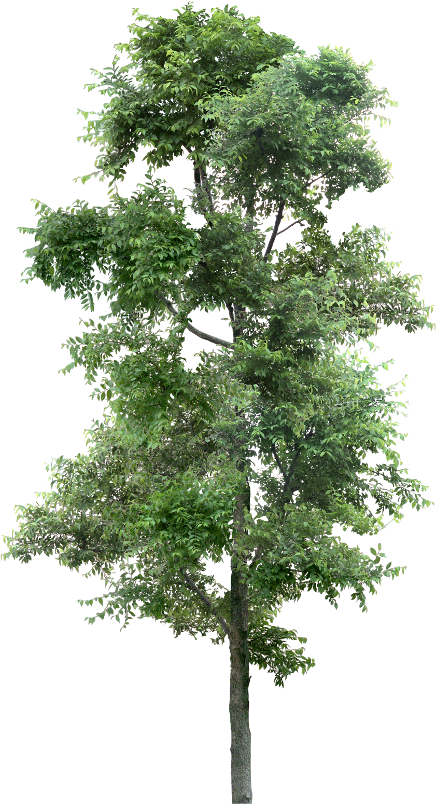

Critical Curating
Ella Peterson , Haemin Hwang , Nicholas Steele , Matthew Cuschieri , Chloe Gardner , Rachel Moss , Yingshuet Lam , Augustina Wang , Daniel Grimme , Joanne Kim , Randolph Heartfield , Viraj Mithani
Work
1. Please re-read Elena Filipovic's text: What is an Exhibition, as I
think this might be a helpful reminder of different ways one might
approach exhibition making the subtle and not-so-subtle strategies
that artists have utilized in reimagining what an exhibition can be.
2. I think the exhibition can be organized one of several ways and I
want to offer some examples to visit and perhaps riff off of: a) I
believe I mentioned my former project space, Cleopatra's, exhibition
where each founder brought in an object and throughout the duration of
the exhibition participants were invited/scheduled to come in at
different times and exchange one work for a new one that then went
into the exhibition. We then documented this by having each exchange
described on a document, which we then turned into a booklet. You
could totally riff on this idea if you wanted to. We also organized a
project, where we created a bookshelf and wrote to a range of cultural
workers/curators we were inspired by and invited each of them to send
us a book, which was then installed on the bookshelf for exhibition
and later we turned the collection into a library in our space.
Perhaps this is something you might want to play around with? b) Maybe
you want to create obstructions in which the exhibition is
reorganized. The film: The Five Obstructions was an experimental film
in which the filmmaker Lars von Trier had his friend and mentor Jorgen
Leth remake his famous film The Perfect Human five different times
with five different obstructions.
 1?Here might be an artwork or documentation
1?Here might be an artwork or documentation2?Here might be an artwork or documentation
c) I do think it is worth revisiting the two Triple Candie exhibitions
as possible approaches - Chloe presented on the Hammons exhibition and
the other was Cady Noland. While complicated and ethically
challenging, there might be something here as far as parameters and
the expressed desire of working together to build something. It would
also be good if you can start a text chain for each of your working
groups. As. we have very little time, I need you to be working on this
in and out of class. We cannot devote entiere classes to the final
project, as there is still quite a bit to cover in our readings and
discussions. The following needs to happen based on this timeline,
please make note and discuss amongst one another: April 21: In working
groups, begin press release, exhibition plan, checklist, online
component April 28: Present to class and confirm the press release,
exhibition plan, checklist, online presence May 5: Finalize checklist,
fabrication, installation/deinstallation schedule, opening and
programming May 12: May 19 (reading day): Is this when installation
takes place? May 26: deinstallation, return of work and final
walkthrough Let me know if you have any questions, Kate
c) I do think it is worth revisiting the two Triple Candie exhibitions
as possible approaches - Chloe presented on the Hammons exhibition and
the other was Cady Noland. While complicated and ethically
challenging, there might be something here as far as parameters and
the expressed desire of working together to build something. It would
also be good if you can start a text chain for each of your working
groups. As. we have very little time, I need you to be working on this
in and out of class. We cannot devote entiere classes to the final
project, as there is still quite a bit to cover in our readings and
discussions. The following needs to happen based on this timeline,
please make note and discuss amongst one another: April 21: In working
groups, begin press release, exhibition plan, checklist, online
component April 28: Present to class and confirm the press release,
exhibition plan, checklist, online presence May 5: Finalize checklist,
fabrication, installation/deinstallation schedule, opening and
programming May 12: May 19 (reading day): Is this when installation
takes place? May 26: deinstallation, return of work and final
walkthrough Let me know if you have any questions, Kate